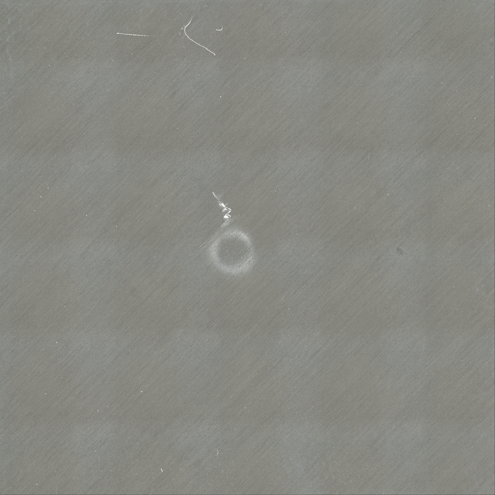
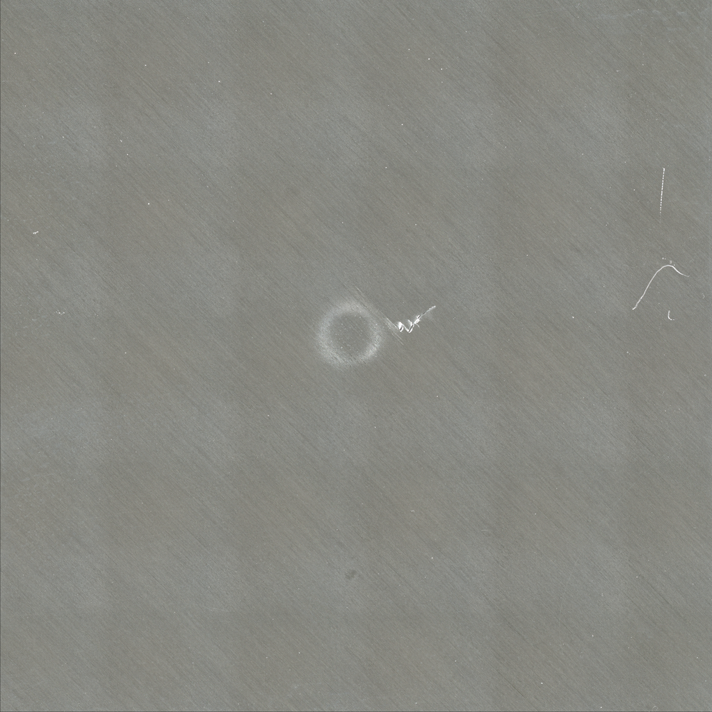
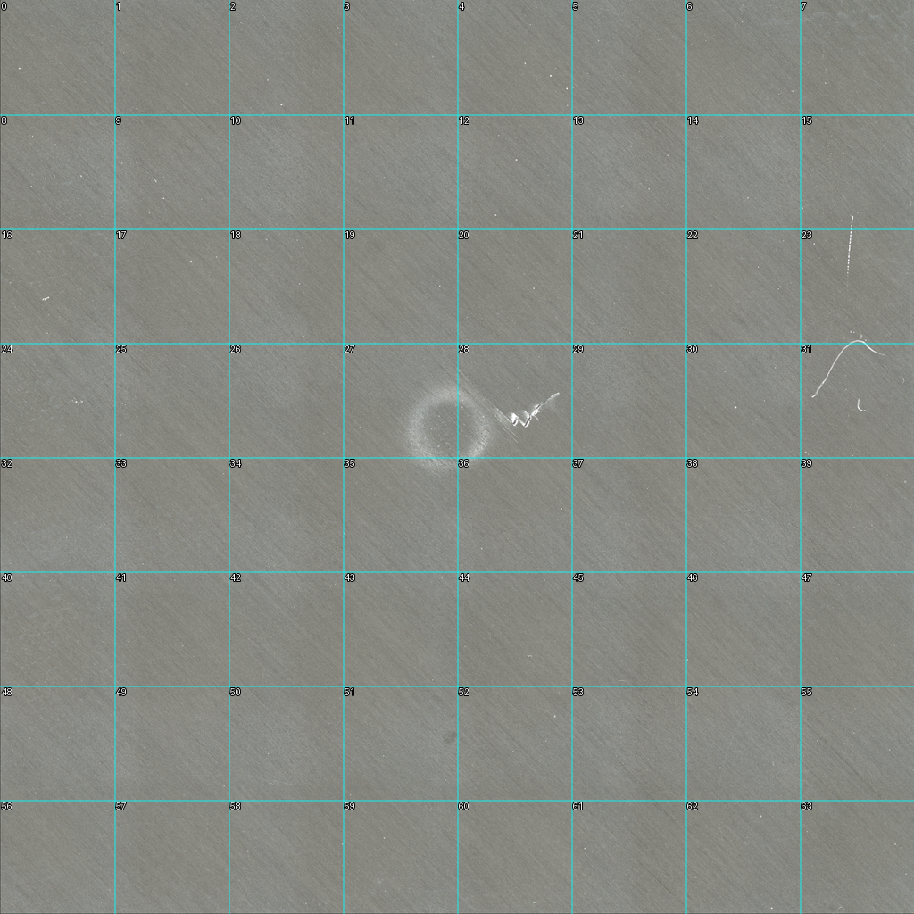
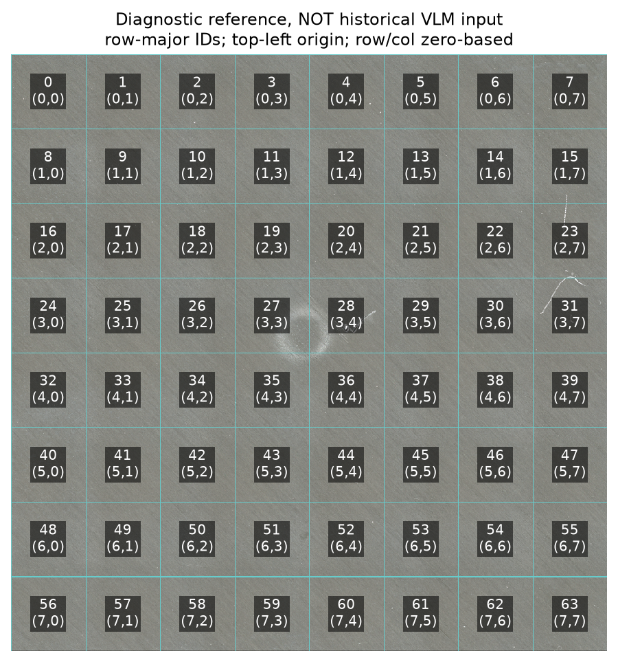
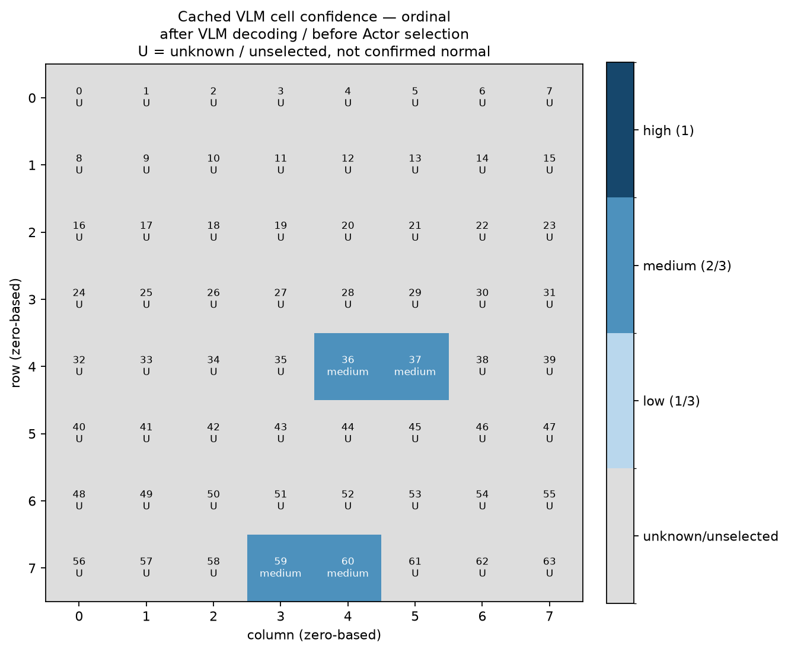
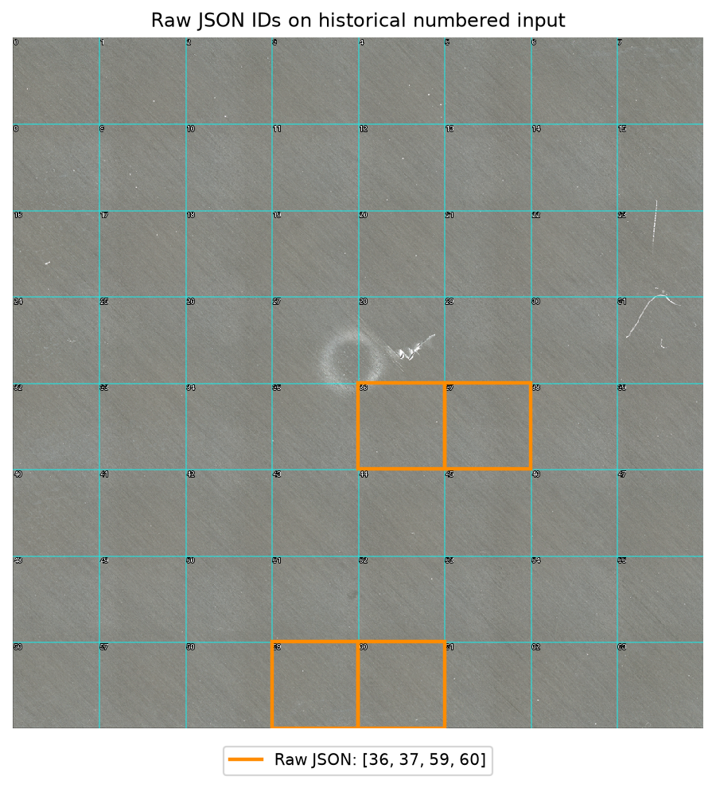
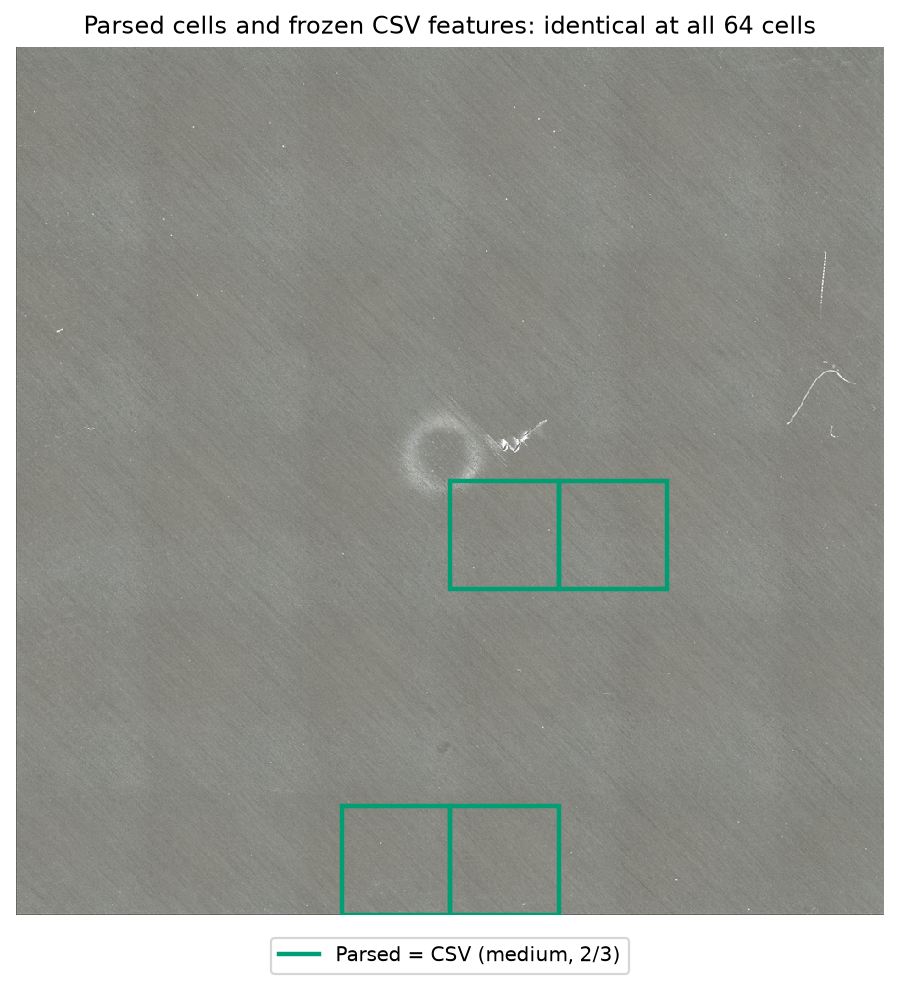
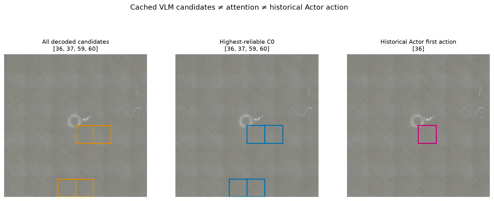
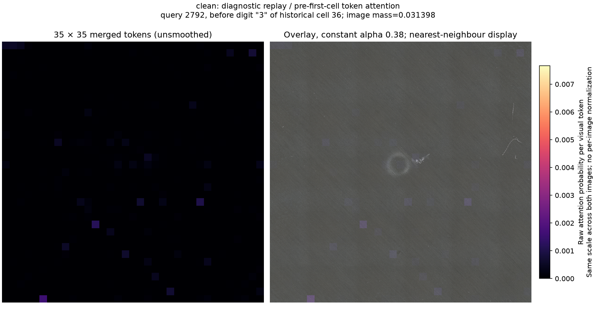
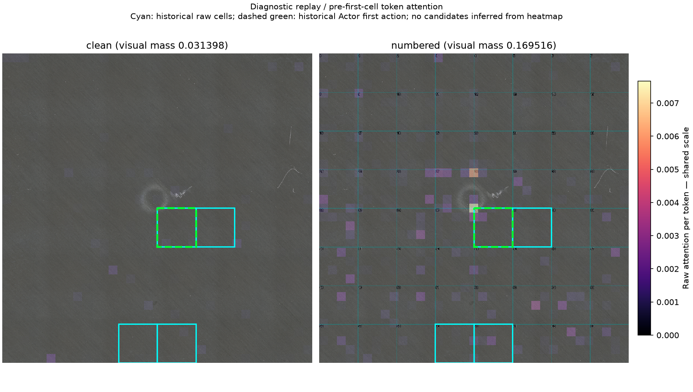

VLM选格与坐标诊断
本页区分历史候选与本次新提取的注意力。图片可点击查看原尺寸；clean与编号图的注意力使用相同色标。注意力不是损伤概率或CAI价值。
来源：Hasebe等，cgtnjyggtm v1，CC BY 4.0；诊断叠加由本任务添加。原始方向见01，其余表面视图统一为历史VLM输入方向。
原回答→解析→64格特征一致；历史候选图和首动作图逐像素复现，未发现该链路坐标错位。
历史没有保存选格前注意力；本次新执行1次冻结Qwen前向。完整历史解码过程未重放，只检查首个数字token之前的状态。
该query的原始注意力总量：clean图3.14%、编号图16.95%。请重点查看图11；中央峰值token跨越多个格，不能把它当作GT或最优动作。
身份与阶段状态
- 试样 specimen_key
- cgtnjyggtm:q24-48
- 源身份说明 source_identity_note
- 已按任务指定q24-48的源图哈希、cache_key、两输入hash、固定案例与历史overlay交叉确认；本轮消息未附新图片，因此未声称与未提供的上传图逐像素匹配。
- A阶段 status
- COORDINATE_EXPORT_COMPLETE
- 注意力 status
- ATTENTION_EXPORTED
- 注意力 reason
- True diagnostic query-row attention extracted from one new frozen Qwen forward; not historical saved attention.
identity.json
{
"specimen_key": "cgtnjyggtm:q24-48",
"source_identity_note": "已按任务指定q24-48的源图哈希、cache_key、两输入hash、固定案例与历史overlay交叉确认；本轮消息未附新图片，因此未声称与未提供的上传图逐像素匹配。",
"source": {
"specimen_key": "cgtnjyggtm:q24-48",
"split": "VALID",
"impacted_surface_path": "data/public/hasebe/raw/cgtnjyggtm/v1/impacted surface image/q24-48.png",
"surface_sha256": "89090ab85a001ed26f3133af555ebe6f56fe894068bb0330eef57c45759673cb",
"registered_cscan_crop_path": "data/public/hasebe/processed/cgtnjyggtm/internal_cscan/q24-48.png",
"registered_cscan_crop_sha256": "891dc75c089b0bd4362492f6c84fe4ddb9ed484b9c4e00c92b69184e1d2b0037",
"registered_cscan_height_px": "674",
"registered_cscan_width_px": "675"
},
"source_path_resolved": "/home/ww/paper3/cmc_damage_inference/data/public/hasebe/raw/cgtnjyggtm/v1/impacted surface image/q24-48.png",
"source_orientation": "source orientation: original file, no rotation",
"render_operation": "RGB -> ROTATE_270 (clockwise 90 once) -> longest-edge <=1024 LANCZOS",
"source_size_wh": [
3357,
3357
],
"render_size_wh": [
1024,
1024
],
"cache_key": "d11f57f3d3ba2e96339d1857e31f3f9192074a624682d7bf4faa29cd04345773",
"clean_sha256": "c4d3d9badaaa6b9ff0b351685a1833a8dab13443b79642d4f6353ef3f6fdf0c9",
"numbered_sha256": "27d40ac5937960d91439d15a6f928dde9e834da4fcd826f540678530e314da8b",
"input_identity_exact_png_hash": true,
"model_revision": "cc594898137f460bfe9f0759e9844b3ce807cfb5",
"historical_call_count": 1,
"repaired": false,
"historical_attention": "NOT_RECORDED",
"original_invalid_answer": "NOT_APPLICABLE_UNREPAIRED",
"raw_cells": [
36,
37,
59,
60
],
"c0": [
36,
37,
59,
60
],
"historical_first_action": 36,
"source_credit": "Hasebe et al., cgtnjyggtm version 1, CC BY 4.0; diagnostic overlays added."
}
stage_a.json
{
"status": "COORDINATE_EXPORT_COMPLETE",
"input_hashes_match": true,
"raw_parsed_cache_csv_all_64_equal": true,
"c0_matches_trace": true,
"first_action_row_col": [
4,
4
],
"native_vs_render_boundary_max_difference_px": [
0,
0
],
"synthetic_roundtrip_64_pass": true,
"historical_overlay_comparison": {
"surface_cues": {
"archived_path": "results/cai_agent_v3/w3_pilot/r1_0e11452a/figures/cgtnjyggtm_q24-48_surface_cues.png",
"archived_hash_matches_manifest": true,
"same_code_rgb_equal": true,
"old_shape": [
639,
607,
3
],
"new_shape": [
639,
607,
3
],
"max_abs_pixel_difference": 0
},
"first_action": {
"archived_path": "results/cai_agent_v3/w3_pilot/r1_0e11452a/figures/cgtnjyggtm_q24-48_first_action.png",
"archived_hash_matches_manifest": true,
"same_code_rgb_equal": true,
"old_shape": [
639,
607,
3
],
"new_shape": [
639,
607,
3
],
"max_abs_pixel_difference": 0
}
},
"coordinate_conclusion": "No raw/parsed/CSV cell mismatch; exact row-major surface rectangles; see archived pixel comparison. Surface/C-scan grids use their own dimensions. No permutation mapping called by v3.",
"new_model_forwards": 0
}
attention_status.json
{
"status": "ATTENTION_EXPORTED",
"actual_qwen_forwards": 1,
"reason": "True diagnostic query-row attention extracted from one new frozen Qwen forward; not historical saved attention.",
"new_other_model_forwards": 0,
"replay_token_status": "REPLAY_FIRST_TOKEN_MATCH",
"gpu": 0,
"elapsed_seconds": 168.1250597499311,
"max_allocated_gib": 29.098062992095947,
"implementation": "Explicit FP32 last-query softmax of live post-RoPE repeated-head Q/K; actual SDPA output unchanged; mean all heads then final four decoder layers. No gradients, rollout or candidate interpolation."
}
诊断输出（按顺序）




原始回答 raw_response.txt（折叠）
```json
{
"no_reliable_cue": false,
"regions": [
{
"cells": [36, 37],
"cue": "circle with white speckles",
"alternative": "dust or debris accumulation",
"confidence": "medium"
},
{
"cells": [59, 60],
"cue": "line",
"alternative": "scratch or mark on the surface",
"confidence": "medium"
}
]
}
```





数据与记录链接
- 原始回答 raw_response.txt
- 原始提示词 prompt.txt
- 身份 identity.json
- A阶段状态 stage_a.json
- 注意力状态 attention_status.json
- 坐标追踪表 coordinate_trace.csv
- 64维特征表 features_64.csv
- 解析回答 parsed_response.json
- 缓存记录 cache_record.json
- 注意力 token 映射 attention_token_mapping.csv
- 注意力权重总量 attention_mass.json
- clean 原始35×35注意力数组
- numbered 原始35×35注意力数组
- 最后四层各层全head平均向量
- clean 原尺寸未平滑热图
- numbered 原尺寸未平滑热图
- 前缀、query和图像token参数
- 真实下一token top-10
- 历史候选图原件
- 历史首动作图原件
- 64格合成往返检查
{kind=link}
{kind=link}
{kind=link}
{kind=link}